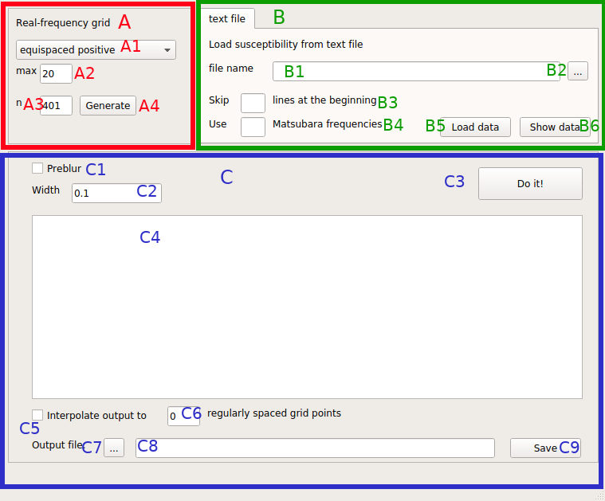

Introduction¶
This application is an implementation of the standard algorithm of MaxEnt for bosonic quantities. Thus it can be used for the analytic continuation of physical susceptibilities from Matsubara frequencies to real frequencies.
Before launching the program, I recommend to go to your preferred working directory, e.g. where you have stored the data that you want to continue.
Then you can start the program from the command line by /path/to/ana_cont/scripts/maxent_bosonic.py and the main window of the application will appear on the screen. In the following, we will explain the difference of the user interface with respect to the fermionic continuation application.
Main Window¶
The main window is very similar to the main window for fermionic continuation:
{kind=link}
An important difference is that on the real axis, only positive frequencies are used. Nevertheless the user can choose to make them equispaced or “centered”, i.e. denser at lower frequencies.
Furthermore there is no option for direct read-in from w2dynamics files, since there is no unified format for susceptibilities. Instead, better export your susceptibilities to text files with three columns:
Matsubara frequency
Value (real)
Error bars.
The Matsubara frequencies start at 0 and are really the values of the frequencies, not indices. Due to the properties of the bosonic kernel (or causality of susceptibilities) the data are purely real.
The output quantity is not directly the susceptibility, but rather -Im(chi)/(omega * pi). Thus, in many cases you may have to multiply the result with omega. However it is more general to output chi/omega, since then also the value at 0 is stored. Otherwise, multiplying it by omega, it is always zero and the information is lost.
Problur is also implemented for the bosonic continuation and basically works. I recommend the same workflow as in the fermionic continuation, but want to emphasize that there is no experience yet.